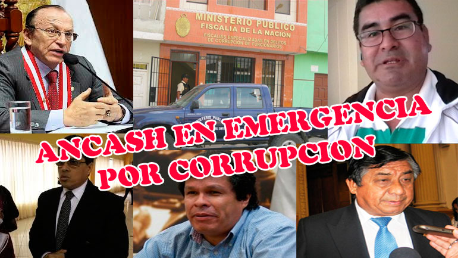

¿Que es la corrupción?
Esta tendencia se presenta y existe en todo tipo de organizaciones, en dónde los prestadores de servicios se aprovechan de las facultades que tienen para sacar provecho de tipo económico a todo tipo de personas susceptibles a sus circunstancias y situaciones. Sin embargo mucho se ha intentado hacer para combatir este mal que desquebraja la sociedad de una manera voraz, dando resultados poco notorios.
La corrupción también ha sido definida como: "comportamiento político desviado" (falta de ética política); "conducta política contraria a las normas jurídicas" (falta de ética jurídica y política); y "usurpación privada de lo que corresponde al dominio público". Cabe destacar que el interés personal no es un elemento que necesariamente debe incluirse en una definición, pues los actos de corrupción no siempre benefician únicamente intereses particulares. La corrupción puede beneficiar a familiares, amigos o incluso a una organización, a una causa o movimiento social, político o cultural. Debido a lo anterior, algunos autores han diferenciado la corrupción egoísta de la solidaria. Para efectos de esta disertación, la corrupción se define como un acto racional ilegal, ilegitimo y no ético por parte de servicios públicos, en perjuicio del interés común de la sociedad y del gobierno, y en beneficio de un interés egoísta o solidario de quien lo promueve o lo solapa directa e indirectamente.
Corrupcion en ancash
En nuestra provincia es una práctica constante lo anteriormente glosado, la falta de organización y el clientelismo creado por “políticos” que asumen el poder como parte de sus logros personales, ha permitido que la corrupción prospere en forma inimaginable y se hace con la permisividad de la población, lo que es alarmante. La corrupción en Ancash, se ésta dando en todos los niveles y los más proclives son los gobiernos ediles, los mismos que, por los fuertes presupuestos que manejan y la absoluta falta de control de los que gozan, hace que sean inmunes a cualquier fiscalización o control; luego tenemos al Gobierno Regional, cuyo poder sobre todos los estamentos, llámese poder judicial, Ministerio Público, Policía Nacional lo hace omnipotente y controla a su antojo, presupuestos, obras, nombramientos de funcionarios, etc., lo que ha permitido que la corrupción linde con la criminalidad, la misma que está organizada por los mismos funcionarios que deben de evitarla, quienes a través de testaferros son los que tienen y ganan todas las licitaciones de las obras, las mismas que les permite ingresos millonarios en detrimento de la calidad de las obras que realizan, pues estas, son un remedo de buena calidad.
Consecuencias de la corrupción
- 1. Favorece la consolidación de élites y burocracias políticas y económicas.
- 2. Erosiona la credibilidad y legitimidad de los gobiernos.
- 3. Reproduce una concepción patrimonialista del poder.
- 4. Reduce los ingresos fiscales e impide que los escasos recursos públicos coadyuven al desarrollo y bienestar social.
- 5. Permite la aprobación y operación de leyes, programas y políticas, sin sustento o legitimidad popular.
- 6. Revitaliza una cultura de la corrupción y contribuye a su proliferación.
Causas de la Corrupción
Se pueden señalar tres tipos de causas que posibilitan la aparición de la corrupción y que se pueden dar en mayor o menor medida en cualquier Estado:
- 1. Causas Formales
Las causas formales se desprenden de la delimitación técnica del término y son:
- 2. Causas Culturales
Antes de presentar estas causas es necesario señalar que el concepto que se maneja hace referencia a la cultura política de un país, es decir: "el conjunto de actitudes, normas y creencias compartidas por los ciudadanos y que tienen como objeto un fenómeno político (en este caso la corrupción)". Las condiciones culturales permiten así delimitar la extensión de las prácticas corruptas, la probabilidad que se produzcan y el grado de tolerancia social con que pueden contar.
Son cuatro condiciones culturales básicas:
- 3. Causas Materiales
Las causas materiales se refieren a situaciones concretas que dan lugar a prácticas corruptas. Las situaciones concretas de las que se trata en este caso son las distintas brechas existentes entre el orden jurídico y el orden social vigente.
Lucha contra la corrupción
La corrupción es un problema que afecta gravemente la legitimidad de la democracia, distorsiona el sistema económico y constituye un factor de desintegración social. De ello son conscientes los Gobiernos del Hemisferio y han "iniciado" a promover y ejecutar acciones que aseguren la erradicación de este flagelo. La lucha contra la corrupción es tal vez uno de los campos en los cuales la acción colectiva de los Estados es no sólo útil y conveniente, sino absolutamente necesaria.